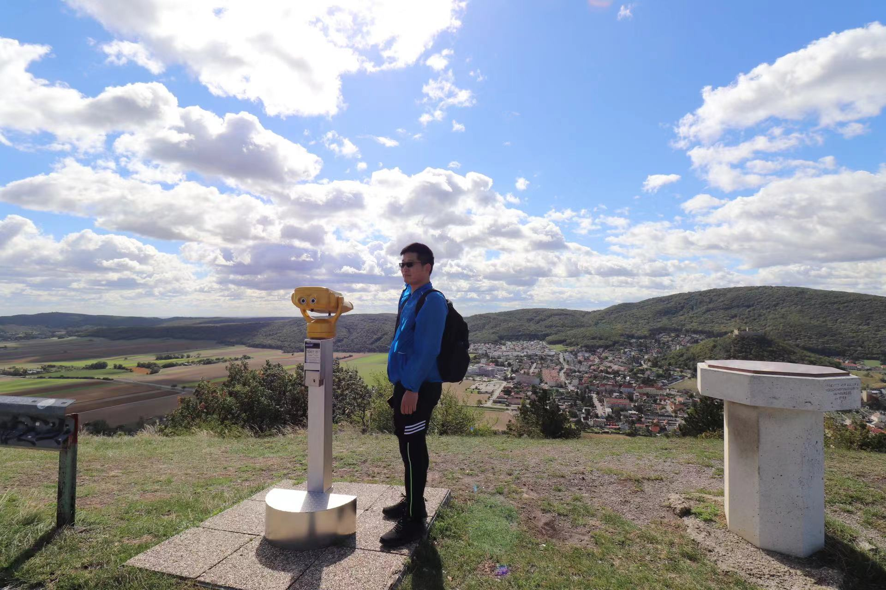

Academic pursuits are like hiking in the wilderness—every journey of a thousand miles begins with a single step.
I'm a hiking enthusiast and dabble in fitness ever since graduation—trying to stay in shape, you know. Occasionally, you'll catch me shooting hoops, smashing ping-pong balls, taking a dip in the pool, or plotting my next move in a game of Chinese chess.
Photo Gallery

Oct 4, 2014, 船底顶

Sep 1, 2017, Qomolangma

Nov 20, 2021, Lantau Island

Nov 20, 2021, Lantau Island

Sep 18, 2022, the Austria-Slovakia border

Dec 23, 2023, Devil's Fist 鬼手岩(https://www.oasistrek.com/devils_fist.php)

Nov 10, 2024, the classroom where inspired me